About Dan
A creative life,
not just a career.
I’ve spent 24 years making things, leading people, teaching what I’ve learned and staying curious enough to keep becoming a beginner again.
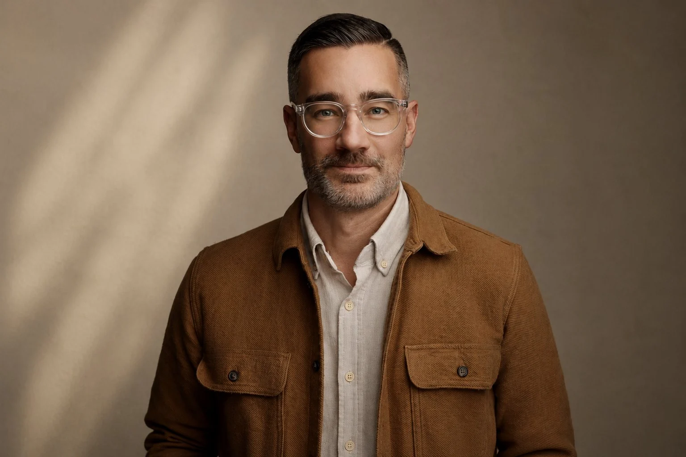
I’m a creative executive, art director, author and educator who has spent a career moving between the big idea and the small detail.
I’ve worked in agencies in Los Angeles, Dallas, Chicago and Grand Rapids. I’ve led national campaigns, managed creative teams, presented ideas to demanding clients, built brands, directed film and photography, designed experiences, taught university students and written about how creative leaders can do the job better.
That range matters to me. I don’t believe strategy and craft should live in different rooms. The strongest creative leaders understand the business problem, can recognize the right idea, can help a team make it excellent—and can still get close enough to the work to know when something feels off.
Create from belief.
Connect with depth.
Carry peace into chaos.
Connect with depth.
Carry peace into chaos.
I studied art direction at VCU Brandcenter after earning my undergraduate degree at Western Michigan University. Years later, I returned to WMU as a professor, teaching Advertising Creative Strategy. Teaching sharpened something I’d already learned as a leader: people do their best work when the standard is clear, feedback is useful and the room feels safe enough to take a risk.
Outside the office, I’m an outdoorsman, photographer and writer. My family and I spent two years living in Patagonia, Argentina. Mountains, weather, long roads and remote places have a way of restoring perspective—and they continue to influence how I think about attention, creativity and a meaningful life.
I’m still happiest when I’m building something: a campaign, a team, a book, a photograph, a point of view—or simply a better way through a hard problem.
A practice
in looking.
Photography / Personal work
Photography is one of the ways I keep looking. A personal practice in composition, light, restraint, patience and attention—made on road trips, in Patagonia, close to home, and wherever something makes me stop.
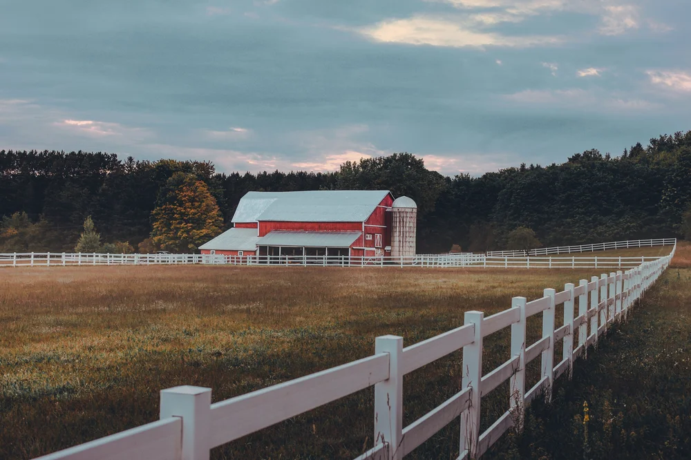
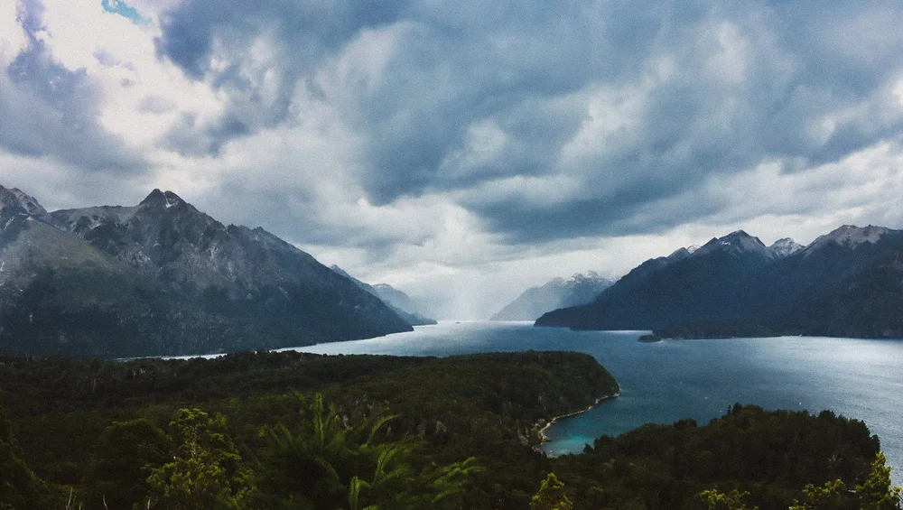
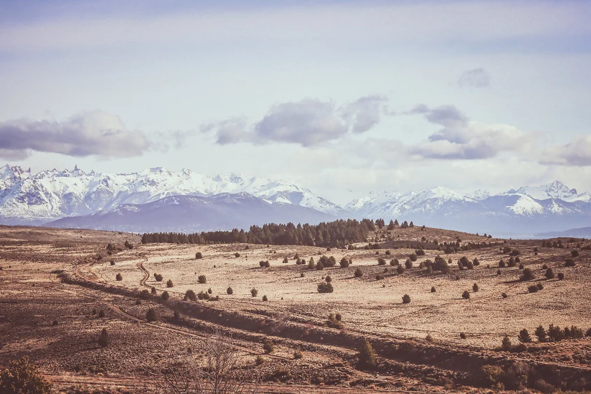
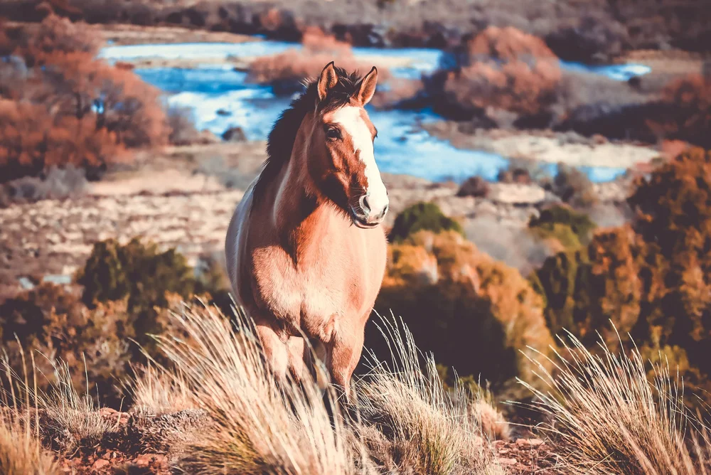
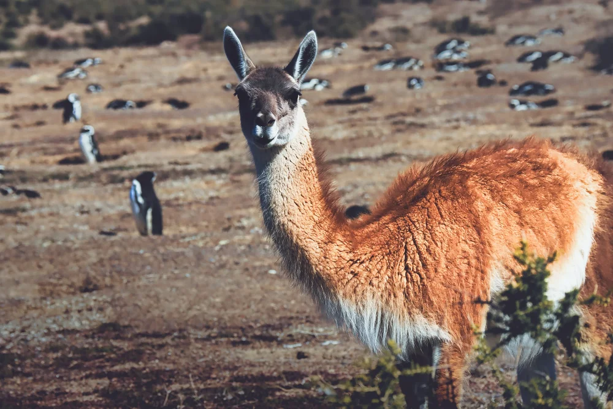
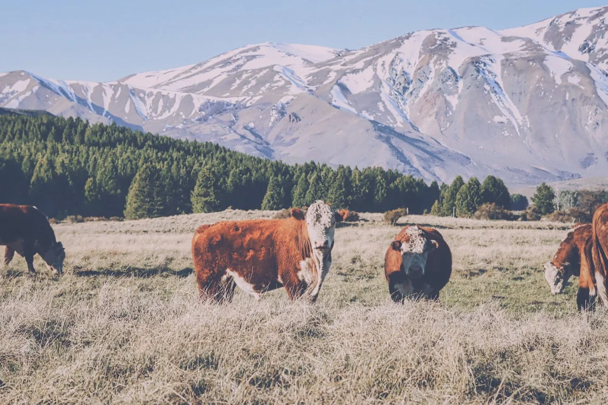
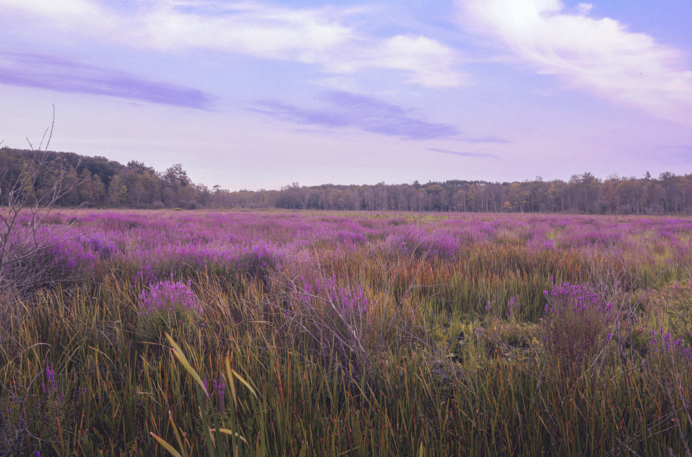
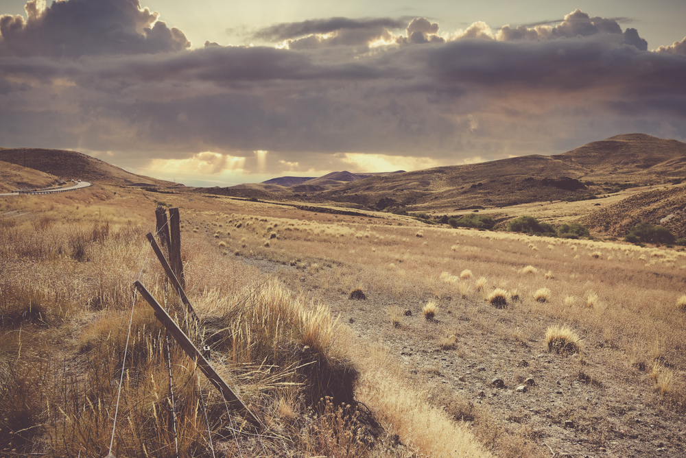
Outside
the work.
A few frames from the life around the career: family, mountains, travel and Patagonia.
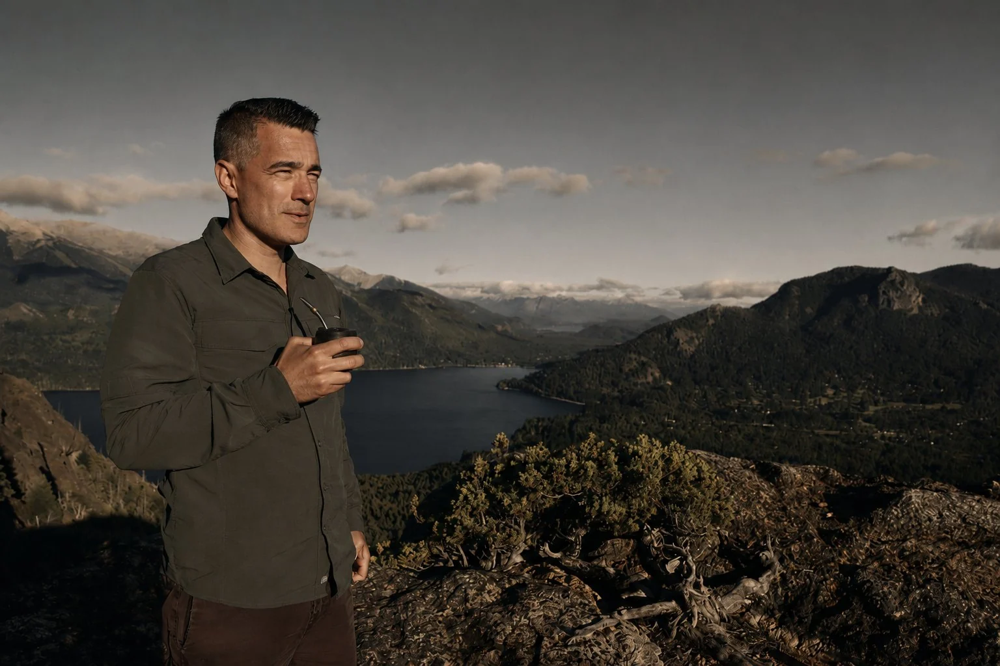
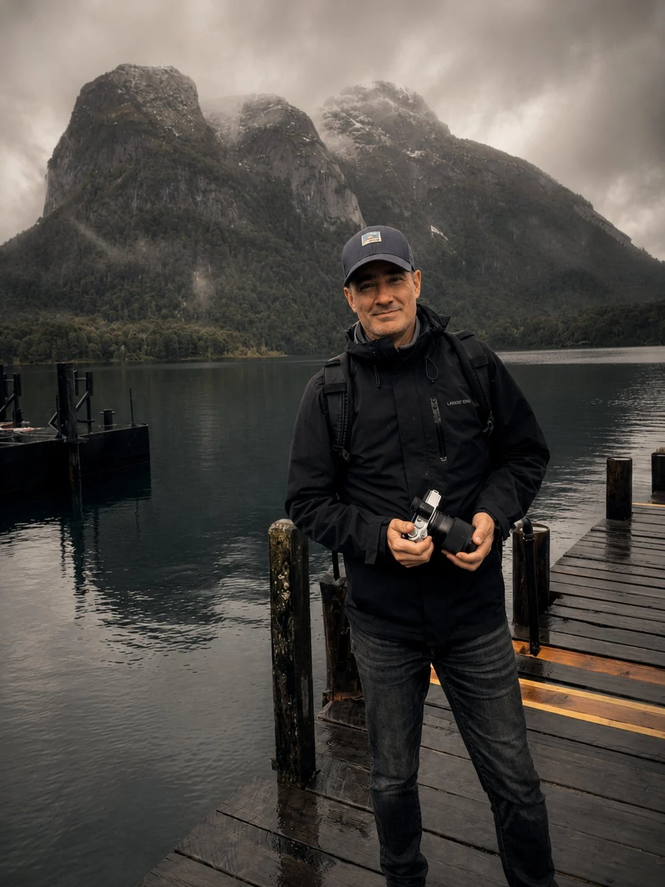
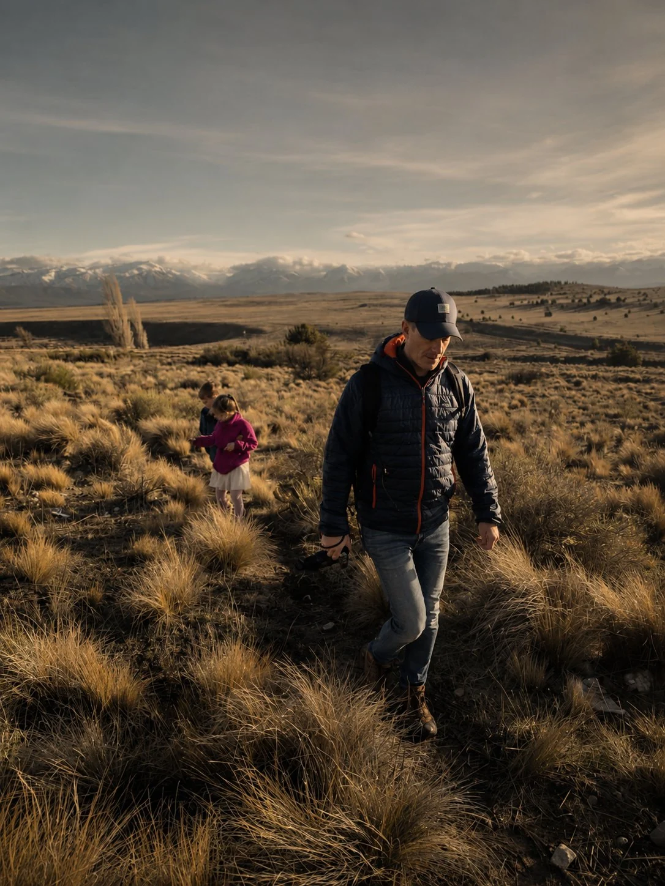
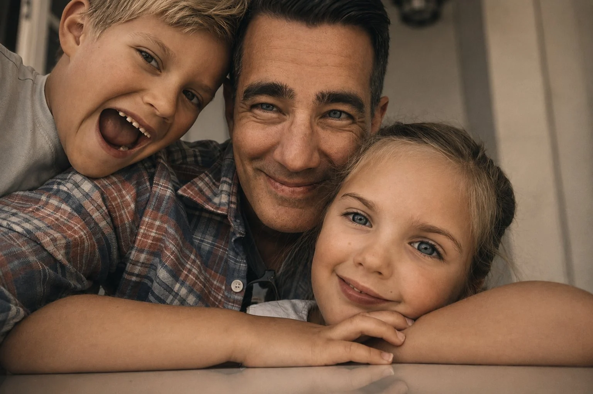
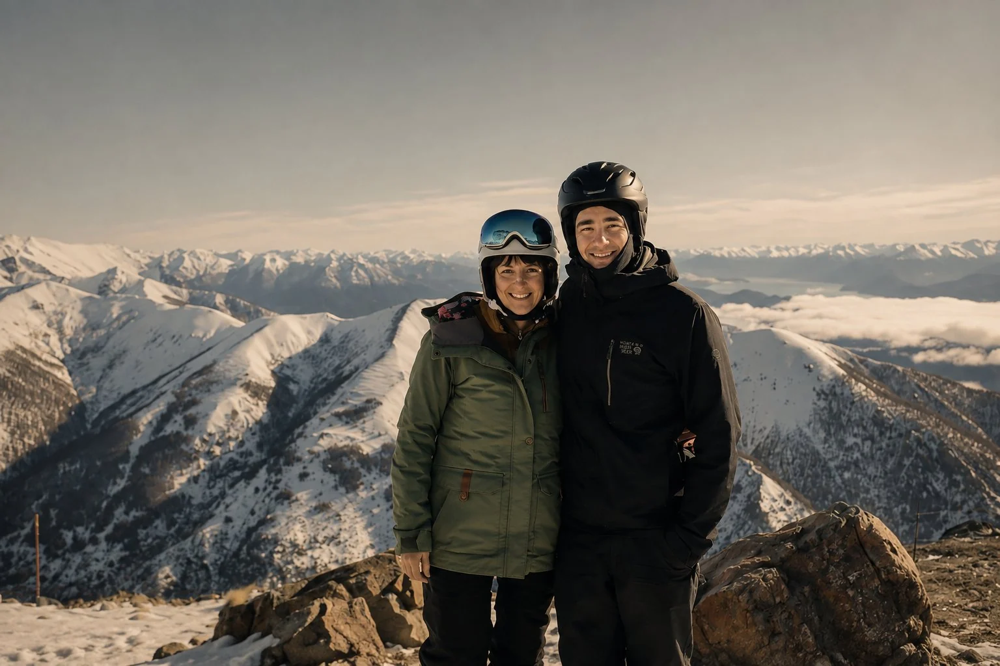
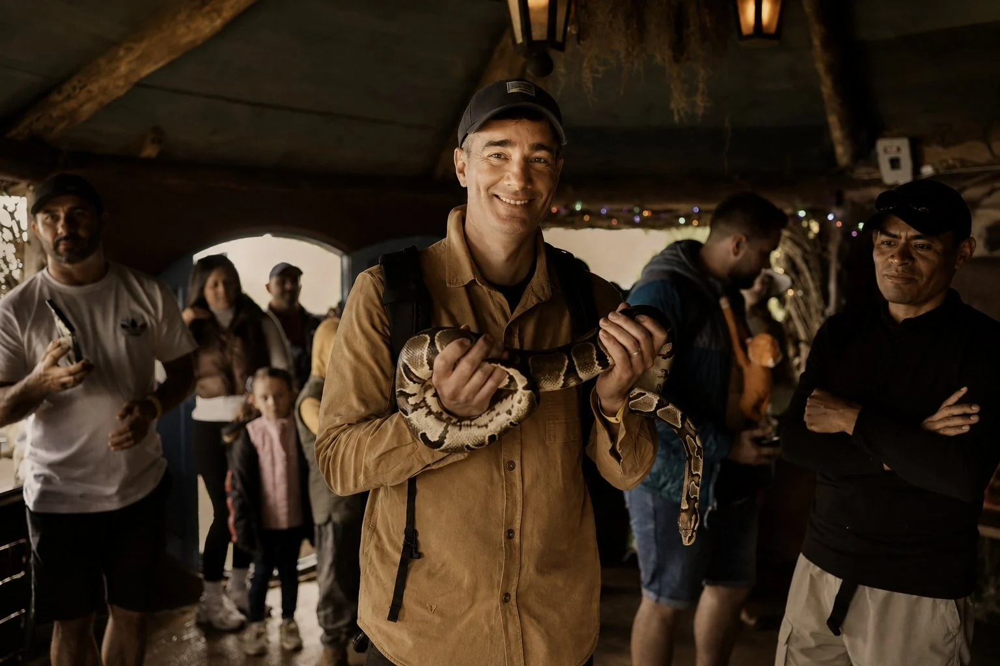
Published
work.
Books that extend my thinking on creative leadership, team dynamics and the craft behind strong ideas.

Start a conversation